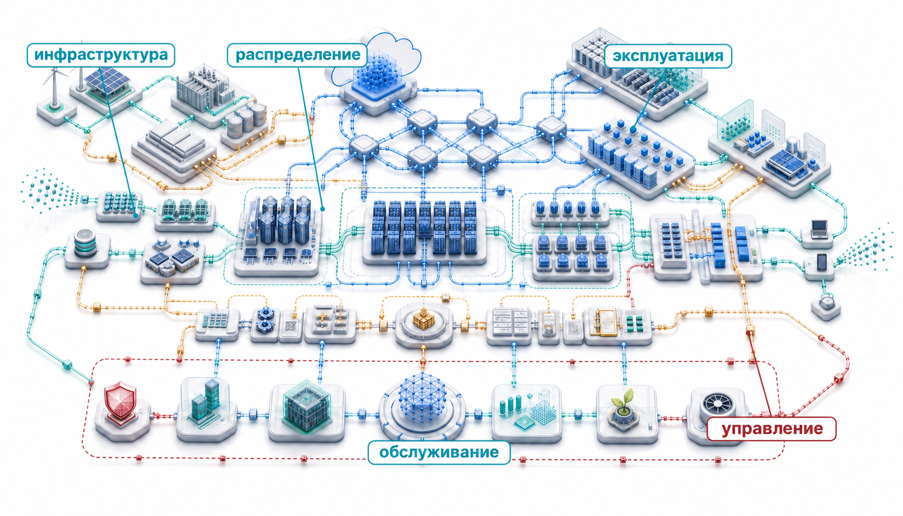
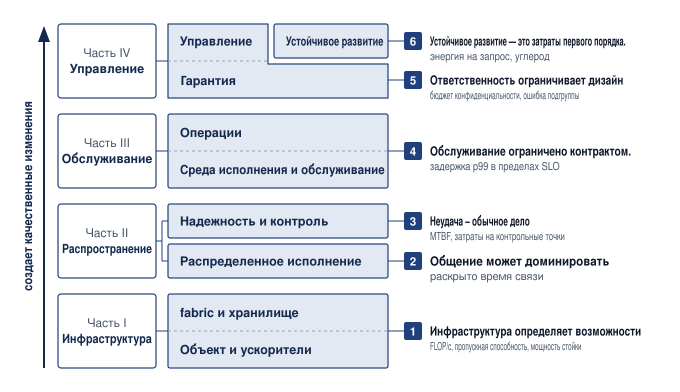
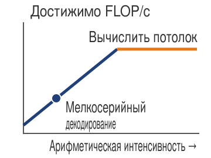

Содержание главы
Содержание
17 Заключение

Назначение
Почему единицей проектирования систем машинного обучения должен стать парк, а не модель?
Машинное обучение в масштабе парка оценивается по всей системе, и локальное улучшение может переместить затраты в слой, который его автор не измерял. Более быстрое вычисление может обнажить узкое место в сети; более крупные задания могут терять больше работы из-за сбоев; сервис, выполняющий целевые показатели задержки, может всё же не иметь доказательств, необходимых для развёртывания. Модель остаётся центральной, но её точность и скорость выполнения не определяют, доставляет ли полная система полезную работу. Добавление ускорителей — это, следовательно, проектное решение об общих ресурсах и обязательствах, а не покупка дополнительной арифметики. Если коммуникация и восстановление съедают сэкономленное время выполнения, расширение может увеличить затраты, не ускоряя прогресс. Если итоговый сервис не может обеспечить доступность или отчитаться о своём воздействии на пользователей, успешное обучение не означает готовности к развёртыванию. Рассуждения в рамках одного узла остаются необходимыми, поскольку у каждого участника всё ещё есть локальные пределы, но они не могут разрешать решения, последствия которых выходят за границы машин, команд и эксплуатационных рамок. Инженерная ответственность — связать эти последствия до принятия проектного решения. Для этого нужны свидетельства о том, что улучшается, что становится более ограниченным и кто несёт перемещённые в другое место затраты. Обоснованное решение может расширять парк, менять распределение работы или откладывать релиз до тех пор, пока эксплуатационные требования не будут выполнены. В терминах C³ задача состоит в том, чтобы проследить связывающее ограничение — вычисления, коммуникацию или координацию — через слои и держать вытесненные им затраты на виду.
Цели обучения
- Свести эту книгу к шести принципам и карте ограничений для распределённых МЛ-систем
- Диагностировать связывающий член C³ в дизайне парка, используя измеренные затраты на выполнение и подверженность сбоям
- Проанализировать, как инфраструктура, распределённое обучение, инференс, эксплуатация и управление взаимодействуют через стек парка
- Перевести обязательства по безопасности, справедливости, приватности, углеродному следу и надёжности в измеримые проектные ограничения
- Обосновать решение о расширении парка или выпуске модели, используя подогнанные законы масштабирования, операционные измерения и свидетельства управления
17.1 Сведение распределённых МЛ-систем воедино
Более быстрый ускоритель может завершить свою локальную работу раньше, но оставить обучающее задание ожидающим того же перегруженного коллективного обмена. Масштаб создаёт качественное изменение, потому что связывающее ограничение может покинуть узел. Оно перемещается в fabric, передающую градиенты, в механизмы восстановления, возвращающие состояние после рутинных сбоев, в сервисный контракт, определяющий, дойдёт ли ёмкость до пользователей вовремя, и в обязательства, определяющие, может ли сервис работать вообще. Книга открылась этим переходом — моментом масштаба — и эмпирическими законами масштабирования из Законы масштабирования ИИ, которые его постоянно вынуждают. Поскольку каждое дальнейшее снижение потерь требует кратного увеличения вычислений, спрос на ёмкость парка не останавливается на размере, при котором работал последний дизайн. Каждая из четырёх последующих частей ответила на долю вопроса, поднятого этим переходом, называя ограничение, измерение, которое его обнажает, и механизм, который его перемещает.
↩︎ Момент масштаба и качественный сдвиг к системам в масштабе парка установлены в Момент масштаба.
Производственная система для фронтирной модели может охватывать тысячи ускорителей, причём связи fabric, уровни хранилища, планировщики, реплики обслуживания, средства контроля безопасности и проверки управления поддерживают одну и ту же рабочую нагрузку. Любой отдельный слой может связать всю систему. Медленная контрольная точка в слое хранилища может погубить целое окно обучения. Перегруженный fabric в интерконнекте может стереть прирост масштабирования от добавленных вычислений. Недостаточная ёмкость пула обслуживания может превратить качество модели в наблюдаемую пользователем задержку. Неизмеренное ограничение ответственности может заблокировать развёртывание даже после того, как техническая система заработала. Именно связанность, пересекающая машины, команды и эксплуатационные границы, отличает фундаментальную инженерию МЛ от инженерии распределённого МЛ. Одноузловой фундамент, организованный призмой D·A·M — данные, алгоритм, машина, — уже связывает модели, конвейеры данных, исполнение и ограничения развёртывания внутри одной машины. Инженерия распределённого МЛ расширяет это рассуждение на общую инфраструктуру, распределённые протоколы и управление в масштабе парка.
↪ Одномашинный фундамент данных, алгоритма и машины собран для справки в Одномашинные основы.
Физический субстрат задаёт скорости, которые наследуют более высокие слои. Топология ускорителей, пропускная способность загрузки данных и сетевая конкуренция ограничивают то, как полоса Distribution разбивает, синхронизирует и восстанавливает работу. Полоса Serving превращает это скоординированное исполнение в сервис с обязательствами по задержке, доступности и стоимости. Полоса Governance определяет, остаётся ли сервис безопасным, устойчивым, долговечным и подотчётным. Шесть принципов формулируют эти наследуемые ограничения как инженерные утверждения в порядке четырёх частей книги.
17.2 Шесть принципов распределённых МЛ-систем
Когда эти наследуемые ограничения проявляются в продакшене — как обучающий запуск, останавливающийся каждые несколько часов из-за отказа компонента, или пул обслуживания, у которого хвостовая задержка скачет при fan-out запросе, — сбой происходит из физической и институциональной структуры парка, а не из ошибки оператора. Шесть инженерных практик, введённых вместе со стеком парка (сначала инструментирование, резервирование запаса для восстановления и хвостовой задержки, ожидание миграции узких мест, отношение к сбою как к стационарному состоянию, накопление малых выигрышей в эффективности и совместное проектирование железа с алгоритмами), описывают, как инженер парка реагирует на эти реалии, тогда как шесть принципов распределённых МЛ-систем описывают, что физические и институциональные ограничения парка делают истинным — независимо от практики.
Шесть принципов конденсируют принципы уровня частей, заявленные в начале каждой части: принципы парка части I конденсируются в первый, принципы распределённого МЛ части II — во второй и третий (при этом её эмпирический закон масштабирования задаёт сторону спроса в решении о росте в Глава 17.3), принципы «парк в продакшене» части III — в четвёртый, а принципы ответственного парка части IV — в пятый и шестой. Там, где эта глава цитирует один из принципов уровня частей как «принцип» с номером, номер отсылает к его рамке в шапке части. Сами шесть названы словами, и Таблица 1 сопоставляет каждый с его практикой.
Каждый принцип также объясняет, почему сопряжённая с ним практика необходима, а не просто благоразумна. Парк, теряющий прогресс обучения из-за рутинных прерываний, должен закладывать восстановление в бюджет нормальной работы — именно поэтому отношение к сбою как к стационарному состоянию является практикой. Поскольку узкое место мигрирует всякий раз, когда сокращается один из членов, оптимизация, оцениваемая только по уменьшаемому члену, может не ускорить шаг ни на секунду — именно поэтому инженер должен ожидать миграции узких мест и измерять слои, в которые они перемещаются.
↩︎ Шесть инженерных практик, от «сначала инструментирование» до совместного проектирования железа с алгоритмами, установлены вместе со стеком парка в Стек парка и маяковые архетипы.
Закон парка, распределённый аналог «железного закона» одномашинного случая, связывает эти принципы с затратами на исполнение. Это уравнение времени шага из Уравнение (3), без изменений:
Инфраструктура задаёт скорости на устройство за
↪ Почленный разбор Закона парка развит в Декомпозиция по компонентам.
Размещённые на стеке парка, шесть принципов следуют его четырём полосам (Рисунок 1). Полоса Infrastructure определяет физические возможности. Полоса Distribution разбивает исполнение и потому несёт и коммуникацию, и восстановление после сбоев — по принципу на строку. Полоса Serving ограничивает доставку во времени исполнения контрактом. Верхняя полоса Governance имеет две строки. Её нижняя строка, Assurance, содержит безопасность и устойчивость, а верхняя строка разделена на половину управления и половину устойчивости. Два принципа полосы делят её по обязательствам, а не строго по строкам. Responsibility охватывает все обязательства перед людьми, на которых влияет система, поэтому она покрывает всю строку Assurance и половину управления верхней строки, где Ответственный ИИ развивает справедливость и подотчётность. Sustainability покрывает только обязательство по ресурсам — в другой половине верхней строки. Стрелка, проходящая вдоль всего стека, отмечает момент масштаба. Она не выступает седьмым принципом — это предпосылка, с которой книга открылась, и именно её пересечение превращает каждый из шести принципов из локального вопроса в ограничение всего парка.

Шесть принципов, таким образом, работают как карта решений, а не глоссарий (Таблица 1). Каждая строка связывает принцип с вопросом, метрикой и практикой, которыми инженер пользуется при диагностике дизайна в масштабе парка, и с частью и главами, где он развит. Порядок частей — это порядок зависимости, а не ранжирование узких мест. Рабочая нагрузка и её измерения определяют, какое ограничение связывает, а многослойные уровни в Рисунок 1 указывают ведущий архитектурный слой.
| Принцип | Ключевой вопрос | Ключевая метрика | Требуемая практика | Развит в |
|---|---|---|---|---|
| Инфраструктура определяет возможности | Что возможно? | FLOP/s, память и бисекционная пропускная способность, мощность стойки | Совместное проектирование железа с алгоритмами | Часть I: Вычислительная инфраструктура, Сетевой fabric, Хранение данных |
| Коммуникация может доминировать | В чём узкое место? | Открытое время коммуникации, эффективность масштабирования | Ожидать миграции узких мест | Часть II: Коллективная коммуникация, Распределённое обучение |
| Сбой — норма | Как восстановиться? | MTBF, накладные расходы контрольных точек, время отката | Относиться к сбою как к стационарному состоянию | Часть II: Отказоустойчивость, Оркестрация парка |
| Обслуживание ограничено контрактом | Что доходит до пользователя вовремя? | Полезная пропускная способность МЛ (goodput), p99-задержка в пределах SLO, стоимость на запрос | Резервировать запас для восстановления и хвостовой задержки | Часть III: Эффективность парка, Обслуживание в масштабе, Периферийный интеллект, Эксплуатация систем машинного обучения в масштабе |
| Ответственность ограничивает дизайн | Кого это затрагивает? | Бюджет приватности, доли ошибок в подгруппах, журналы аудита | Сначала инструментирование | Часть IV: Безопасность и приватность, Надёжный ИИ, Ответственный ИИ |
| Устойчивость — издержка первого порядка | Какова цена? | kWh на обучающий запуск, энергия на запрос, углерод | Накапливать малые выигрыши в эффективности | Часть IV: Экологически устойчивый ИИ |
Первый принцип состоит в том, что инфраструктура определяет возможности. Физическая инфраструктура ограничивает и допустимые конфигурации, и достижимые скорости. Ёмкость памяти и безопасные пределы энергопотребления и охлаждения определяют, сколько состояния и активного оборудования может поддерживать конфигурация. Пропускная способность бисекции всего кластера вместо этого ограничивает, насколько быстро распределённая работа может обмениваться данными (принцип «Теорема о бисекционной пропускной способности»); недостаточная пропускная способность может сделать недостижимым срок или целевую стоимость, не делая вычисление невозможным. Хранилище задаёт ещё один потолок, потому что ускорители, которые конвейер данных не в состоянии загрузить, простаивают независимо от своей пиковой производительности (принцип «Стена ввода-вывода»). Это стены памяти, сети и энергии момента масштаба, измеряемые в масштабе узла, fabric и дата-центра. Разбиение, размер батча и планирование коммуникации определяют, насколько сильно эти пределы связывают систему, а сами пределы простираются от тепловой плотности уровня чипа до пропускной способности бисекции всего кластера.
Второй принцип состоит в том, что на масштабе связывающим членом может стать коммуникация (Jiang и др. 2024 г.; Narayanan и др. 2021 г.), причём её стоимость задаётся компромиссом между пропускной способностью и задержкой (принцип «Модель α–β») внутри члена
↩︎ Отношение интенсивности коммуникации вводится в Интенсивность коммуникаций (отношение CI).
Коллективные алгоритмы, такие как Ring AllReduce,1 популяризированные для глубокого обучения Horovod (Sergeev и Balso 2018 г.), вместе со сжатием градиентов и перекрытием вычислений коммуникацией решают проблемы коммуникационных узких мест. Для плотных коллективных нагрузок узким местом часто становятся обычные fabric с оверподпиской, что мотивирует fabric с высокой пропускной способностью бисекции и выбор транспорта, соответствующего коммуникационным шаблонам ML. Понимание того, когда именно коммуникация является активным ограничением, проясняет, когда алгоритмические оптимизации помогут, а когда они лишь переносят работу между столь же ограниченными ресурсами. Такой перенос — это вытеснение накладных расходов (принцип «Вытеснение накладных расходов»), при котором уменьшение одного члена шага увеличивает другой, и именно поэтому узкие места мигрируют. Расширение fabric на тысячи узлов также умножает число компонентов, которые задание нуждается в один и тот же момент, а такое умножение делает отказ рутиной.
↩︎ Кольцевые коллективы, перекрытие коммуникации и сжатие градиентов рассматриваются в Коллективная коммуникация.
Третий принцип состоит в том, что отказ — это рутина. Задание, которому одновременно нужны многие компоненты, может сталкиваться с прерываниями достаточно часто, чтобы восстановление стало нормальной операцией. Разрыв надёжности из Разрыв надёжности следует из Уравнение (2). В силу него задание, которому одновременно нужен каждый из его компонентов, каждый из которых независимо доступен с вероятностью
Архитекторы должны закладывать обработку отказов с самого начала. Стратегии контрольных точек балансируют накладные расходы на запись с ожидаемой потерей работы, а интервал Юнга—Дейли (принцип «Формула Юнга—Дейли») оценивает этот баланс при своих предположениях о частоте отказов и стоимости контрольной точки. Эластичное обучение поддерживает изменение состава кластера, а плавная деградация сохраняет определённый уровень обслуживания по мере убывания ёмкости. Каждому механизму нужен проверенный контракт восстановления; одно лишь название не гарантирует, что прогресс или качество обслуживания переживут отказ. Восстановление должно автоматизировать известные сценарии отказов и эскалировать случаи, безопасный ответ на которые требует расследования. Восстановлению нужна и ёмкость. Перезапущенное синхронное задание продвигается только тогда, когда планировщик может снова выделить ему групповое размещение — все его ускорители сразу и в допустимой топологии (принцип «Реализуемость прежде справедливости»). Именно поэтому оркестрация парка держит резервную ёмкость, вытесняет работу с более низким приоритетом и допускает только размещения, которые задание действительно может использовать. Координация — третья ось C³ — не ограничивается этим принципом. Она оплачивается здесь в восстановлении и групповом планировании, в маршрутизации запросов при обслуживании и в шлюзах согласования управления.
↩︎ Частота контрольных точек, анализ среднего времени между отказами (MTBF) и протоколы эластичного восстановления рассматриваются в Отказоустойчивость.
Коммуникация и отказ вместе составляют операционную реальность диапазона Distribution. Развёртывание несёт их обоих в условия, где единицей работы является пользовательский запрос, а не шаг обучения, что даёт четвёртый принцип: обслуживание ограничено своим контрактом. Учёт начинается до прихода любого запроса. Декомпозиция ML goodput (принцип «Три фактора goodput») относит каждый интервал ёмкости, потерянный построенным парком, ровно к одному из трёх факторов, так что у каждой потери есть один владелец. Scheduling goodput — доля ёмкости, занятой полными размещениями; runtime goodput — доля этого выделенного времени, сохранённая как прогресс; program goodput — доля идеальной скорости, достигнутая сохранёнными шагами. Полезная ёмкость обслуживающего парка — это тогда работа, которую он завершает в пределах своих целевых задержки, доступности и стоимости, а не работа, которую его ускорители выполняют в изоляции; именно это измеряется как goodput в смысле целей уровня обслуживания (SLO) в SLO Goodput и «налог» обслуживания.
Производственный инференс, ожидающий каждого работника в fan-out, наследует эффекты хвоста (Dean и Barroso 2013 г.), поскольку завершение зависит от самого медленного необходимого ответа. Запрос, затрагивающий 100 servers, имеет шанс 63.4 percent, что хотя бы один из них ответит за пределами своей задержки на 99-м процентиле, когда задержки серверов независимы,2 так что задержка, редкая для одного сервера, становится обычным случаем для запроса. Маршрутизация — это то место, где координация входит в путь запроса. Зондирование двух из
↩︎ «Сила двух выборов» и стоящие за ней оценки длины очереди рассматриваются в Принцип двух выборов.
Внутри каждой реплики стена памяти возвращается как ограничение обслуживания. Вычисления (TFLOP/s) могут быть в изобилии, тогда как пропускная способность памяти (GB/s) ограничивает авторегрессионное декодирование малых батчей (принцип «Авторегрессионное узкое место»), потому что трафик весов и KV-кэша из памяти с высокой пропускной способностью (HBM) оставляет вычислительные блоки недогруженными. Формирование батчей амортизирует каждое чтение весов между запросами батча, так что связывающее ограничение может сместиться к вычислениям, трафику KV или бюджету задержки. Поэтому исполнительное окружение реплики нужно измерить до выбора любой политики уровня парка. У контракта есть и время жизни. Широко используемая модель может потратить на инференс больше, чем на обучение (принцип «Стоимость обслуживания доминирует над стоимостью обучения»), так что стоимость запроса, а не разовый счёт за обучение, в конце концов доминирует в стоимости владения моделью.

Декодирование малых батчей может располагаться левее хребта roofline.
За пределами дата-центра контракт принимает другие формы. На устройстве телефонного класса контракт — это собственное окружение мощности, тепла и задержки переднего плана устройства, и устройство соблюдает его, допуская фоновую работу, включая локальную адаптацию, обновляющую модель на собственных данных устройства, только когда в окружении есть место. Эта политика допуска имеет последствие, дотягивающееся до обучения. В адаптации участвуют только устройства, чья политика принимает работу, так что контракт на стороне обслуживания решает ещё и то, по чьим данным общая модель учится (принцип «Допущенная популяция») — смещение, которое пятый принцип обязан затем учитывать. На платформе из сотен моделей поэтапные развёртывания и бюджеты надёжности для каждого сервиса соблюдают контракт от выпуска к выпуску, поэтому каждый выпуск должен нести доказательство того, что его цели всё ещё выполняются. Когда парк может доставить сервис, управление решает, позволено ли это.
↩︎ Адаптация на устройстве в пределах телефонных лимитов мощности и тепла рассматривается в Энергия, нагрев и допуск фоновой работы.
Пятый принцип состоит в том, что ответственность ограничивает проектирование. Responsible AI переводит рамки управления рисками в инженерные ограничения (Tabassi 2023 г.). Специфические для безопасности риски — reward hacking, сдвиг распределения и масштабируемый надзор — показывают, почему этим ограничениям нужны механизмы реализации (Amodei и др. 2016 г.). Reward hacking возникает, когда система «обыгрывает» свою измеряемую целевую функцию; сдвиг распределения — когда входные данные развёртывания отличаются от обучающих; масштабируемый надзор — это сложность надзора за поведением, которое люди не могут проверить напрямую. Справедливость, прозрачность, подотчётность, приватность и безопасность — требования первого класса, формирующие архитектуру системы на всём жизненном цикле ML. Принципы уровня частей за этим принципом охватывают происхождение, приватность, робастность и обратную связь. Модели можно доверять лишь настолько, насколько простирается верифицированная запись её данных, кода и весов (принцип «Происхождение ограничивает доверие»). Выпущенные результаты могут раскрывать, чему модель научилась (принцип «Инвариант утечки информации»). Оценка робастности и защиты требуют ресурсных бюджетов, специфичных для механизма (принцип «Штраф устойчивости по вычислениям»). Развёрнутые решения могут формировать будущие обучающие наблюдения (принцип «Инвариант социотехнической обратной связи»).
↩︎ Reward hacking, масштабируемый надзор и сдвиг распределения как конкретные проблемы безопасности ИИ рассматриваются в Безопасность ИИ и согласование ценностей.
Теорема о невозможности справедливости (принцип «Теорема о невозможности справедливости») показывает, почему некоторые требования нельзя удовлетворить одной настройкой. При неравных базовых частотах и несовершенном предсказании риск-скор не может быть одновременно калиброван внутри каждой группы и сбалансирован между группами внутри каждого класса исхода (Kleinberg и др. 2017 г.). Калибровка требует, чтобы внутри каждой группы каждый скор равнялся наблюдаемой частоте исхода среди людей, получивших его; баланс требует, чтобы люди с одним исходом получали одинаковый средний скор в каждой группе. Это аналог на уровне скоров конфликта между равенством возможностей и демографическим паритетом в примере с приёмом из Почему критерии справедливости конфликтуют. Поэтому развёртыванию нужны обоснованные критерии, доказательства их выполнения и владелец, уполномоченный реагировать, когда они нарушаются. Мониторинг выявляет поддерживаемые диспропорции, но сам не выбирает критерий и не обеспечивает средства исправления. Эти обязательства принадлежат проектированию наряду с требованиями к производительности, поэтому практика, которую требует этот принцип, — сначала инструментировать. Доли ошибок по подгруппам, учёт приватности и журналы аудита должны собираться до решения, которое они должны обосновать, потому что диспропорцию, которую никогда не измеряли, невозможно после развёртывания обнаружить, атрибутировать или исправить.
↩︎ Условия калибровки и баланса скоров, связанные теоремой о невозможности справедливости, рассматриваются в Почему критерии справедливости конфликтуют.
Шестой принцип состоит в том, что устойчивость — это стоимость первого порядка. Влияние крупномасштабного ML на окружающую среду возводит эффективность использования ресурсов в первостепенное инженерное ограничение (Strubell и др. 2019 г.; Patterson и др. 2021 г.). Инвариант энергетического масштаба из Граница энергетического учёта задаёт учётную дисциплину — фиксированную границу для полезной работы и для потребляемой ею энергии. Закон парка объясняет, почему открытая коммуникация и синхронизация стоят джоулей так же, как и секунд, поскольку энергия шага приближённо равна его средней мощности, умноженной на
↩︎ Учёт углерода, энергетические метрики и эффекты отката Джевонса рассматриваются в Экологически устойчивый ИИ.
Таким образом, устойчивость становится инженерной дисциплиной с собственной учётной цепочкой, в которой энергия ИТ, умноженная на эффективность использования энергии (PUE) дата-центра и углеродную интенсивность электросети, даёт операционные выбросы, а воплощённый углерод производства аппаратуры добавляется к итогу. Два звена показывают, насколько сильно может качаться эта цепь. Обучение GPT-3 потребило около 1,287 MWh — примерно 120 американских домохозяйств-лет электричества (Li 2020 г.), — и та же энергия из угольной сети Польши даёт примерно в 41× больше углерода, чем из гидроэлектрической сети Квебека. Цепочка объясняет и практику, которую требует этот принцип. Небольшие выигрыши в эффективности накапливаются на каждом ускорителе и каждом запросе парка, но рост использования может их поглотить, поэтому накопление эффективности ограничивает суммарные выбросы только тогда, когда абсолютный бюджет ограничивает итог. Планирование с учётом углерода, оценка жизненного цикла,3 и оптимизация эффективности — инженерные средства соблюдения этого бюджета.
↩︎ Расчёт операционного и воплощённого углерода рассматривается в Расчёт углеродного следа.
В совокупности шесть принципов описывают качественное изменение, которое масштаб производит в парке. Каждый более крупный режим приносит поведение, возникающее из знакомых механизмов, как впервые показал момент масштаба. Задание обучения, масштабируемое с 8 GPU до 8 000, может встретить коммуникационные узкие места, дисбаланс нагрузки или накладные расходы синхронизации, пренебрежимые при 8, а обслуживающий парк, обрабатывающий миллион запросов в день, ожидает отказ одного запроса на миллион примерно раз в день. Поэтому отстающие, создающие узкие места в кластерах, сетевые разделения, раскалывающие обучение, и гетерогенность между поколениями аппаратуры, усложняющая балансировку нагрузки, становятся рутинными проектными вводными, а не аномалиями. Поскольку эмпирические законы масштабирования (принцип «Законы масштабирования ИИ») продолжают нести команды, стремящиеся к меньшим потерям, в более крупные режимы, производственное проектирование должно взвешивать предсказанный этими законами выигрыш в качестве против полностековых затрат, которыми управляют шесть принципов.
17.3 Полная промышленная система
Команда, удваивающая свой обучающий кластер в погоне за следующей точкой на кривой масштабирования, сокращает вдвое идеальное арифметическое время шага, но добавленные ускорители также увеличивают коллективный трафик, сокращают интервал между аппаратными сбоями и создают нагрузку на фиксированный энергетический бюджет площадки. Эмпирические законы масштабирования задают потребность в росте такого парка, а Закон парка (Уравнение 1) задаёт его цену, так что вместе они определяют, когда рост окупается и где он ломается. Кривая масштабирования оценивает, что даёт рост; она не обязывает организацию этот рост покупать. Масштабирование окупается лишь до тех пор, пока предсказанный прирост качества оправдывает то, что парк берёт по каждой из статей, изменяющихся вместе с
Следовательно, рост может сломаться на любой из двух сторон. Со стороны модели условия breakdown из Таблица 2 отмечают, когда экстраполяция подогнанной кривой качества становится ненадёжной — например, когда ёмкость модели перерастает доступное число токенов или дополнительные данные перестают нести новую информацию. Со стороны систем стена масштабирования из Математика эффективности масштабирования отмечает, где добавленные коммуникация и координация съедают вычислительное время, которое экономят добавленные ускорители (принцип «Граница эффективности масштабирования»), тогда как доступная мощность площадки ограничивает конфигурацию независимо от того, как распределена работа. Полноценное производственное проектирование должно оценивать обе стороны вместе.
Рассмотрим архетип A (GPT-4/Llama-3). Поскольку конфигурация GPT-4 не опубликована, разобранные в этой книге примеры для неё используют плотный трансформер класса GPT-3, обучаемый в смешанной точности на эталонном кластере из 1,024 GPUs и затем развёртываемый в глобальном парке обслуживания. Во время обучения пакеты записи контрольных точек должны укладываться, не оставляя голодными загрузчики данных, а результаты коллективных операций должны приходить раньше вычислений, которые от них зависят. Коммуникация может перекрываться с независимой работой, но её нескрытая часть задерживает прогресс. В этом масштабе планирование восстановления использует наблюдаемые затраты на запись и интенсивности отказов, причём интервал Юнга—Дейли даёт приближение там, где выполняются его предположения (Young 1974 г.; Daly 2006 г.). SLO обслуживания требуют запаса на откат и резервный путь, а управляющие политики обеспечивают санкционированные условия того, какие данные, модели и выходы могут попасть к пользователям. Это связанные скорости, бюджеты, подверженности отказам и политические ограничения, которые нужно спроектировать до развёртывания.
Производственная система начинается с физической ёмкости, но ёмкость имеет значение лишь тогда, когда скорости согласованы. Поэтому хранилище, сетевой fabric и вычисления должны проектироваться совместно, чтобы приём данных поспевал за потреблением ускорителей, запись контрольных точек укладывалась в бюджет восстановления, а fabric пропускала реальный коллективный трафик. Согласование этих различных скоростей с потребностью рабочей нагрузки важнее, чем выравнивание их сырых пропускных способностей.
Стратегии параллелизации должны соответствовать этим физическим скоростям и ожидаемой картине отказов. Параллелизм по данным, тензорный параллелизм и конвейерный параллелизм — не взаимозаменяемые шаблоны; каждый меняет давление на память, объём коммуникации, поведение контрольных точек и сложность планировщика. Гибридные стратегии становятся полезными только тогда, когда окружающие проект хранилища, fabric и восстановления способен поддержать форму разбиения.
↩︎ Как партиционирование по данным, тензорное, конвейерное и гибридное по-разному распределяют давление на память, объём коммуникации и «пузырь» конвейера, установлено в Сравнение стратегий параллелизма.
Обслуживание добавляет отдельную границу приемки. Контракт четвёртого принципа судит о модели по её задержке, доступности и стоимости на живом трафике — независимо от того, работает ли она в реплике дата-центра или на устройстве телефонного класса. Часть средств обеспечения безопасности и устойчивости исполняется на пути запроса; другие действуют во время обучения, релизной проверки или асинхронного мониторинга. Каждому нужен путь доказательств и реагирования, отвечающий его обязательству. Следовательно, обучающая пропускная способность не доказывает, что модель будет отвечать живым требованиям к задержке, восстановлению, безопасности, подгруппам и углеродному следу. Расширение парка поднимает два связанных решения — принять ли больший обучающий запуск и выпускать ли модель, которую он производит, — и каждому нужны собственные доказательства.
Чтобы оценить первое из этих решений на базовой конфигурации архетипа A, предположим, что предлагаемое расширение удваивает эталонный кластер до 2,048 GPUs, сохраняя fabric и уровень контрольных точек. Поскольку удвоение
При интервале Юнга—Дейли из Уравнение (7) накладные расходы на контрольную точку и переделку составляют около
Эти цифры оптимистичны. Они учитывают только отказы GPU, тогда как коммутаторы, сетевые карты и программное обеспечение добавляют свои прерывания. Полносистемный анализ в Интервал контрольных точек из анализа отказов, добавляющий отказы PCIe-коммутаторов и сетевых интерфейсов для кластера из 10,000 GPUs, приходит по той же формуле к соответственно большим накладным расходам. Конкуренция за запись с загрузкой данных или изменившийся размер контрольной точки также потребовали бы их пересмотра. Системные допущения перечисляет число параметров, байты контрольной точки на параметр, MTTF GPU и пропускную способность записи контрольных точек, стоящие за этими цифрами, так что читатель может пересчитать их или подставить другие значения.
Тем не менее эти оценки дают решающее правило. В этом примере измеренное время шага охватывает непрерываемое исполнение и исключает накладные расходы на контрольную точку и переделку, поэтому эти расходы, которые goodput среды исполнения считает потерянным временем (Goodput этапа исполнения), входят в оценку времени запуска отдельным множителем. Время шага, измеренное за весь запуск, уже включает паузы восстановления и повторно множитель брать не должно. Поскольку лишь доля
Однако, не достигнув сверхлинейного ускорения шага, расширение не может сэкономить часы ускорителей. Суммарные часы ускорителей равны числу GPU, умноженному на астрономическое время запуска. Даже если непрерываемое время шага сокращается вдвое при идеальном ускорении в 2
Эта цена покупает время, а не качество, потому что работа фиксирована. Качество входит в сравнение, только если удвоенный кластер тратит вдвое больше вычислений вместо скорейшего завершения, и там прирост оценивает подогнанная кривая масштабирования. В степенном законе вычислений, подогнанном в Kaplan и др. (2020 г.) (представленном в законах масштабирования из Законы масштабирования ИИ, Рисунок 8), функция потерь падает как вычисления в степени
Решение о выпуске затем применяет собственную проверку к модели, которую производит расширенный запуск. Сквозной контракт оценки (принцип «Принцип контракта оценивания») фиксирует эту проверку до exposure. Контракт — это единственная версионируемая релизная запись, привязывающая кандидата к измерениям, эквивалентным продакшену, подотчётной инстанции приемки, проверенному восстановлению и явным условиям, при которых доказательства теряют силу. Его serving-шлюз требует от модели достижения целевой задержки p99 при нагрузке, эквивалентной продакшену, с запасом на откат и резервный путь. Для архетипа A управляющие шлюзы требуют записи провенанса, фиксирующей данные, код и веса, доказательств, ограничивающих то, что могут раскрыть выпускаемые выходы, и учёта энергии обучения по заявленной границе. Не прошедший шлюз вариант возвращается в строку стек-фреймворка парка, владеющую отказом, что может означать изменение разбиения, размещения, распределения ёмкости или плана выпуска, а выпуск продолжается только после того, как исправленный кандидат пройдёт проверку.
↩︎ Сквозной контракт оценки и его версионируемая релизная запись установлены в Сквозной контракт оценивания.
Ограничения, стоящие за этими исправлениями, могут конфликтовать. Оптимизация коммуникации может увеличить подверженность отказам, требования устойчивого развития могут ограничить выбор инфраструктуры, а управляющие политики могут съедать задержку или ёмкость обслуживания. Вытеснение накладных расходов требует измерять эти перенесённые затраты прежде, чем принять локальное ускорение.
Архетип A прослеживает лишь один путь через эти межуровневые компромиссы; взятые вместе, три маяковых архетипа показывают, что ни один угол таксономии C
↩︎ Три маяковых архетипа и то, какой из них нагружает вычисления, коммуникацию или координацию, установлены в Три системных архетипа.
| Полоса стека парка | Архетип A (GPT-4/Llama-3) | Архетип B (DLRM at Scale) | Архетип C (Federated MobileNet) |
|---|---|---|---|
| Репрезентативный член C |
Коммуникация, в масштабе парка | Координация, в маршрутизации и размещении | Локальные вычисления, в пределах возможностей устройства |
| Инфраструктура (часть I) | Состояние обучения и контрольные точки далеко превышают память одного ускорителя, что мотивирует разделение; частые коллективы тензорного параллелизма требуют самого быстрого домена интерконнекта | Таблицы эмбеддингов на несколько терабайт превышают память любого устройства, а живые поиски признаков требуют хранилища с произвольным доступом | Энергетические, память и тепловые лимиты телефонного класса ограничивают возможности локального обучения |
| Распределение (часть II) | 3D-параллелизм и AllReduce должны укладываться в бюджет шага, а частота контрольных точек по Young-Daly отслеживает сбои, измеряемые часами | Шардирование эмбеддингов превращает поиски в обмены AllToAll, у которых время завершения задаёт самый горячий получатель | Федеративное усреднение заменяет AllReduce, а пересбор с дедлайнами раундов ограничивает ожидание нестабильных клиентов |
| Обслуживание (часть III) | Декодирование малыми батчами ограничено пропускной способностью памяти, поэтому формирование батчей, политика KV-кэша и пожизненная стоимость обслуживания определяют развёртывание | Шардирование по признакам и маршрутизация должны удерживать хвостовую задержку в бюджете при миллионах запросов в секунду | Адаптация выполняется только в выделенных окнах, сохраняющих дедлайн foreground-задачи, а выкаты растягиваются на недели рассогласования версий |
| Управление (часть IV) | Происхождение данных, утечки выходов и энергия каждого запуска обучения ограничивают релиз | Рекомендации формируют будущие обучающие данные, что требует свидетельств справедливости и дрейфа с подотчётной реакцией на протяжении жизненного цикла обслуживания | Безопасная агрегация ограничивает видимость отдельных обновлений; дифференциальная приватность ограничивает раскрываемую информацию при заданных предположениях учёта; смещение участия определяет, чьи данные вносят вклад |
Каждый столбец прослеживает ограничения, с которыми одна рабочая нагрузка сталкивается на полосах, а каждая строка сравнивает, как одна полоса ограничивает разные рабочие нагрузки. Все эти ограничения не обязаны связывать одновременно. Репрезентативные члены описывают режимы эксплуатации, а не постоянное закрепление архетипов за членами C
- Начать с наблюдаемого симптома — отказа, видимого пользователю или оператору.
- Привязать метрику, которая делает симптом фальсифицируемым.
- Отобразить симптом на C
, определив, что связывает первым — вычисления, коммуникация или координация. - Найти строку стека парка, которой принадлежит вмешательство.
- Указать стоимость, которую предлагаемое исправление переносит в другое место.
- Сохранить свидетельства аудита, безопасности, защищённости или ответственности, необходимые для обоснования решения.
На расширенном кластере запуск обучения, отстающий от расписания, проходит через каждый шаг этой процедуры. Отставание от расписания — это симптом, а фальсифицируемая метрика — утилизация модельных FLOPs, измеряемая на шаг, — мера полезной пропускной способности программы из Программная полезная производительность и его мера, снизившаяся после расширения. Профиль шага показывает ускорители, простаивающие на барьерах синхронизации градиентов, но само это ожидание не отличает медленный коллективный обмен от позднего прихода рангов после вычислений, загрузки данных или задержек планирования. Поэтому выровненные по-ранговые трассировки должны отделять разброс прибытия от открытого времени завершения коллективов. Когда такие трассировки показывают малый разброс прибытия и возросшее открытое время обмена, они указывают на коммуникацию как на связывающий член и на строку распределённого исполнения, где планируется коллективный обмен и его перекрытие, как на владельца вмешательства. Предлагаемое исправление, например сжатие градиентов, сокращает передаваемые байты, перенося стоимость в риск для сходимости и точности, а значит сохранять нужно запись о сходимости и оценке, показывающую, что сжатый запуск всё же достигает целевого качества.
Та же процедура перенаправляет и другие симптомы. Оповещение о справедливости может указывать на отсутствующие метки, недостаточную мощность проверки или пороговую политику на пути обслуживания, а не только на веса модели. Инцидент безопасности может указывать на происхождение артефактов, права доступа или свидетельства для отката, а не на отказ сетевого периметра. Дисциплина в том, чтобы следовать за ограничением, пока не станут видны строка, которой оно принадлежит, и связанный с ним компромисс. Когда исправление меняет поставляемое, свидетельства последнего шага входят в релизную запись того же сквозного контракта оценки.
17.4 Освоенные компетенции
Предлагаемое расширение кластера проверяет компетенции по всему стеку. Принять его требует свидетельств того, что сокращение времени вычислений переживает затраты на коммуникацию и восстановление, а выпуск его модели требует отдельного суждения об обслуживании и управлении. Владение означает умение выявлять эти зависимости, выбирать измерения, которые их проверяют, и защищать решение в рамках заданных предположений. Каждая полоса стека вносит одну проверяемую часть этой защиты.
В полосе инфраструктуры главный вопрос — какое инфраструктурное ограничение связывает рабочую нагрузку. Инженер, освоивший этот материал, может сопоставить память и вычисления ускорителя с моделью, выделить хранилище и пропускную способность сети под требуемые скорости и учитывать питание и охлаждение как ограничения ёмкости, а не как детали инфраструктуры. В расширении этот навык решает, сможет ли сохранённый fabric, уровень контрольных точек и питание площадки вообще нести 2,048 GPUs.
В полосе распределения главный вопрос — как заставить рабочую нагрузку больше любой отдельной машины вести себя как одна согласованная система. Инженер может анализировать паттерны коммуникации, выбирать стратегию параллелизации и оценивать частоту отказов по MTTF компонентов, размеру парка и модели зависимости отказов. Имея модель стоимости коллектива, например упомянутая стоимость Ring AllReduce из Глава 17.2, инженер может также предсказать, какие её члены растут с
В полосе обслуживания главный вопрос — как обученная модель продолжает приносить ценность под живым трафиком. Инженер может закладывать налог обслуживания, выбирать политики формирования батчей и размещения и отслеживать в продакшене производительность системы и распределения входных данных, чтобы работающая модель не превратилась в неэффективный или устаревший сервис. В расширении эта полоса даёт задержечный гейт, который выпускаемая модель должна пройти с запасом на восстановление.
↩︎ Налог обслуживания, который распределённое исполнение добавляет в бюджет задержки каждого запроса, установлен в SLO Goodput и «налог» обслуживания.
В полосе управления главный вопрос — кто несёт издержки и риски решений системы. Инженер может переводить обязательства по безопасности, приватности, справедливости, устойчивости и экологичности в средства контроля и свидетельства: границы доступа, бюджеты приватности, оценки подгрупп, адверсариальные, out-of-distribution- и тесты дрейфа концепций, процедуры реагирования на инциденты и учёт ресурсов. В расширении эта полоса даёт свидетельства безопасности, подгрупп и углеродного следа, требуемые для решения о выпуске.
Эти компетенции связывают разработку модели с последствиями развёртывания. Они также дают проверку переносимости. Когда появляется новая рабочая нагрузка или подложка, инженер должен определить её границу учёта, ограничения и требования к свидетельствам, прежде чем принимать заявление об эффективности.
17.5 Куда смещается следующий связывающий ограничитель
Когда рассуждающая модель тратит секунды вычислений во время теста на один пользовательский промпт или оптический интерконнект заменяет медь на уровне коммутации, эта проверка переносимости применяется напрямую. Связывающий ограничитель смещается снова. Те же шесть принципов управляют рабочими нагрузками и подложками, только сейчас возникающими. Вычисления во время теста, представленные среди режимов масштабирования в Режимы масштабирования при ограниченных ресурсах, уже перемещают часть кривой масштабирования из обучающего кластера на путь обслуживания, где Вычисления на этапе тестирования и бюджет на запрос оценивает их как бюджет вычислений на запрос. Под парком новые подложки интерконнекта и упаковки меняют скорости, которые наследует каждый член Закона парка. Каждое смещение переносит стоимость, не освобождая её от Закона парка.
Выигрыши от планирования, размещения и перекрытия зависят от физического fabric, поэтому выбор программного обеспечения и подложки нужно оценивать вместе. Когда программное обеспечение устранило устранимую координацию, оставшийся рубеж — подложка, перемещающая токены, активации и энергию через парк. Для архетипа A давление на эту подложку исходит от конкретных паттернов коллективов, а не от масштаба вообще. Тензорный параллелизм инициирует частые коллективы по разделённым тензорам, а в вариантах таких моделей на смеси экспертов (MoE) маршрутизация инициирует рассылку AllToAll на каждом экспертном слое. На тысячах ускорителей энергия каналов накапливается с объёмом этого коллективного трафика, что делает менее энергоёмкие интерконнекты правдоподобным рычагом эффективности fabric.
Кандидаты-подложки атакуют разные множители этого физического счёта: энергию на бит, длину пути, плотность пропускной способности или расстояние между памятью и вычислениями. Оптический ввод-вывод и совместно упакованная оптика снижают энергию перемещения каждого бита по fabric, а 3D-интеграция расширяет вертикальную компоновку HBM и передовую упаковку, сокращая пути интерконнекта. Нейроморфные событийно-управляемые подложки вместо этого организуют вычисления вокруг разреженных событий, таких как спайки, и держат состояние рядом с вычислительными блоками, которые его используют. Автоматизированный поиск архитектур и оптимизация AI-for-systems предлагают способы исследования кандидатов, но каждое предложение всё же требует сравнения полезной работы, перемещения данных, мощности и стоимости реализации для конкретной рабочей нагрузки.
↩︎ Нейроморфные и другие неноймановские направления установлены в Направления будущих исследований.
Меньшая энергия на бит доходит до парка лишь пропорционально доле каналов в мощности парка — это арифметика затронутой доли по закону Амдала, применённому к энергии. При фиксированном трафике уменьшение энергии на бит вдвое экономит не более половины доли каналов в мощности парка, а не половину мощности парка. Само по себе более низкое измерение энергии канала, следовательно, не доказывает лучший парк. Оптический дивиденд из Оптические соединения задаёт объём экономии мощности оптики для одного коммутатора и для кластера коммутаторов — отправную точку для этого расчёта доли. Даже подложка, выигравшая сравнение по энергии, всё равно нуждается в отказоустойчивости и ответственном управлении, прежде чем она улучшит парк.
Какой бы ни была подложка, дисциплина остаётся той же. Инженер выбирает единицу полезной работы, учитывает её полную стоимость ресурсов и указывает, какие сравнения подтверждают свидетельства. Сужение этой границы до одного компонента, слоя или бенчмарка в изоляции порождает повторяющиеся ошибки проектирования парка.
17.6 Заблуждения и ловушки
Заключительные ошибки все происходят от оптимизации неверной единицы проектирования. Модель может улучшаться, пока парк становится медленнее, менее надёжным, дороже или труднее в управлении.
Заблуждение: Более быстрая модель автоматически означает лучшую систему.
Сырая скорость модели важна, но это лишь один член Закона парка. В иллюстративном шаге с равной работой и доминирующим барьером работник, работающий со скоростью 80 percent от скорости peers, снижает пропускную способность на 20 percent относительно равномерно быстрых работников. Более быстрая модель, доставленная как более быстрое ядро на каждом работнике, кроме одного, оставляет шаг связанным отстающим, поскольку ускорение работников, уже ожидающих на барьере, не сокращает лимитирующее вычисление. Проект, сокращающий время ядра при росте давления на контрольные точки, конкуренции в сети, вариативности обслуживания или риска управления, может сделать систему в целом хуже. Системный вопрос в том, улучшает ли изменение полезную пропускную способность — ML goodput из Полезная производительность систем машинного обучения — при фактических ограничениях: перемещение данных, синхронизация, восстановление после отказов, мощность, задержка и подотчётность.
Ловушка: Оптимизация одного слоя при сокрытии создаваемого им ограничения в другом.
Локальное улучшение становится опасным, когда переносит стоимость в слой, который никто не измеряет. Большие батчи могут поднять утилизацию ускорителей, ухудшив хвостовую задержку; агрессивное сжатие может сократить коммуникацию, повысив риск точности; планирование с учётом углерода может снизить выбросы, потребовав большего запаса в сервисном бюджете. Хорошая инженерия уважает перенос накладных расходов, сохраняя перенесённое ограничение видимым, чтобы система могла выбирать осознанно, а не наследовать скрытое узкое место.
Заблуждение: Уроки масштаба парка привязаны к сегодняшнему аппаратно-программному стеку.
Конкретные процессоры, фреймворки и движки обслуживания изменятся, но прочные зависимости останутся. Данные должны достигать вычислений с требуемой скоростью. Работники должны обмениваться данными до того, как синхронизация остановит задачу. Отказы нужно ожидать при больших числах компонентов. Системы обслуживания должны укладываться в бюджеты хвостовой задержки. Ограничения управления должны быть спроектированы в операционный путь. Названия технологий — примеры; урок составляют зависимости по скоростям, отказам и подотчётности.
Ловушка: Относиться к управлению и устойчивости как к внешним проверкам, а не как к системным ограничениям.
Откладывание безопасности, справедливости, приватности и углеродного учёта может создать архитектурный долг. Задним числом добавлять журналы аудита, мониторинг по демографическим группам, контроль доступа, процедуры удаления или углеродно-осознанное размещение может потребовать восстановления свидетельств или перепроектирования развёрнутых компонентов. Выявление этих обязательств на этапе проектирования позволяет командам заложить бюджет требуемых путей и проверить их работоспособность до релиза; фактическая стоимость всё же зависит от средства контроля и развёртывания.
17.7 Итоги
В масштабе парка улучшение модели или ускорителя не доказывает, что улучшается полный сервис. Инженерный объект — связанная система, которая перемещает данные, планирует работу, переживает отказы, обслуживает пользователей и выполняет обязательства управления при физических и организационных ограничениях. В своём подобранном режиме законы масштабирования задают спрос на рост парка, Закон парка задаёт его цену, а шесть принципов указывают, где в парке эта цена платится. Метод, повторяющийся по всей книге, следует из всех трёх. Он выявляет связывающее ограничение, количественно оценивает его стоимость и оценивает предлагаемое изменение по каждому затронутому операционному пути, так что переносимая им стоимость остаётся видимой, а не возрождается неизмеренной в другом слое.
Основные выводы: Парк — единица проектирования
- Парк — это объект: Шесть принципов сводятся к одной привычке — следовать за связывающим ограничением через инфраструктуру, коммуникацию, координацию, обслуживание и управление. Парк, а не отдельная модель или компонент, — единица, которую нужно строить, измерять и оптимизировать.
- Рост должен заслужить свою цену: В подобранном режиме каждое удвоение вычислений даёт всё меньшее абсолютное снижение потерь, тогда как подверженность прерываниям и накладные расходы контрольных точек растут с парком, и открытая коммуникация может расти вместе с ним. Расширение — решение, обоснованное измерениями и релизными свидетельствами, а не значение по умолчанию.
- Масштаб меняет вероятностную модель: Когда задержки серверов независимы, запрос, затрагивающий 100 servers, имеет шанс 63.4 percent, что хотя бы один ответит за пределами своей задержки 99-го перцентиля, а задача, которой нужны все
независимых компонентов, видит, как интервал между прерываниями сокращается как . Поведение парка — не повторённое поведение одного узла. - Выигрыши оркестрации требуют системных измерений: Планирование, размещение и перекрытие коммуникации улучшают полезную пропускную способность лишь тогда, когда их выигрыши переживают затраты на восстановление, сервисные дедлайны и ресурсные бюджеты. Измеряйте полный операционный путь, прежде чем принимать локальное улучшение как выигрыш всего парка.
- Обязательства принадлежат пути: Безопасность, приватность, справедливость, устойчивость, углерод и аудируемость — производственные ограничения, а не внешние проверки. Дисциплина в том, чтобы спроектировать их в конвейеры данных, планировщики, пути обслуживания и операционные процедуры до того, как масштаб сделает компромисс необратимым.
Заключительная дистилляция: Дисциплина систем машинного обучения
Предложенный более крупный запуск теперь можно оценивать, а не предполагать его необходимость. В рамках модели независимых, одинаково распределённых отказов с постоянной интенсивностью из примера расширения и при неизменном времени записи контрольной точки удвоение парка вдвое сокращает ожидаемый интервал между прерываниями и повышает оптимизированные накладные расходы на контрольную точку и переделку примерно в 1.41×. Оно покупает календарное время, лишь расходуя больше ускоритель-часов на ту же работу. Стоит ли строить такой запуск, зависит от убывающего прироста качества, который предсказывает его подобранная кривая масштабирования для удвоения, от измеренных затрат времени и энергии на его доставку и от доказательств, которых требует его релиз. Инженерное достижение — это обоснованное решение, включая решение сохранить текущий парк, когда расширение не удовлетворяет этим условиям. Та же дисциплина применима, масштабируется ли вычисления обучения на тысячи ускорителей или модель обслуживается миллионам пользователей под контрактом на задержку (latency). Инженер следует связывающему ограничению по всему парку, учитывает каждую вытесненную стоимость и принимает дизайн только тогда, когда доказательства его поддерживают.
Prof. Vijay Janapa Reddi, Harvard University
использованная литература
Сноски
Ring AllReduce: Коллектив, который отправляет
байтов на каждого работника и получает столько же при размере сообщения , что даёт в модели коммуникации - , где — пропускная способность в каждом полнодуплексном направлении. Коэффициент приближается к 2 объёма сообщения на работника по мере роста , оставаясь оптимальным по пропускной способности для больших сообщений.↩ Вернуться к тексту Хвостовая задержка: Оценка равна единице минус вероятность того, что каждый сервер ответит в пределах своего процентиля, что при независимости есть серверная вероятность, возведённая в число серверов; Балансировка нагрузки и маршрутизация запросов анализирует обобщаемые ею эффекты хвоста. Общая перегрузка коррелирует задержки серверов, поэтому реальный парк может оказаться выше или ниже этой цифры, и предположение о независимости нужно проверять по измеренным трассам.↩ Вернуться к тексту
Оценка жизненного цикла: Жизненный цикл аппаратного обеспечения и электронные отходы оценивает влияние на окружающую среду на протяжении срока службы системы, включая воплощённый углерод от производства аппаратуры. Воплощённые выбросы могут стать существенной долей общего влияния на чистых сетях или при слабом использовании аппаратуры.↩ Вернуться к тексту